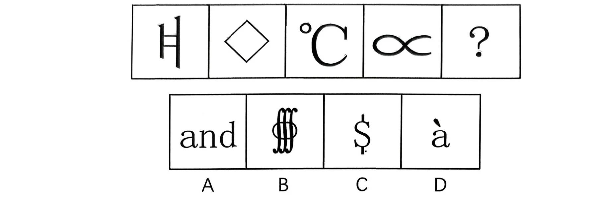
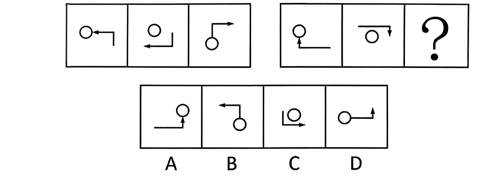
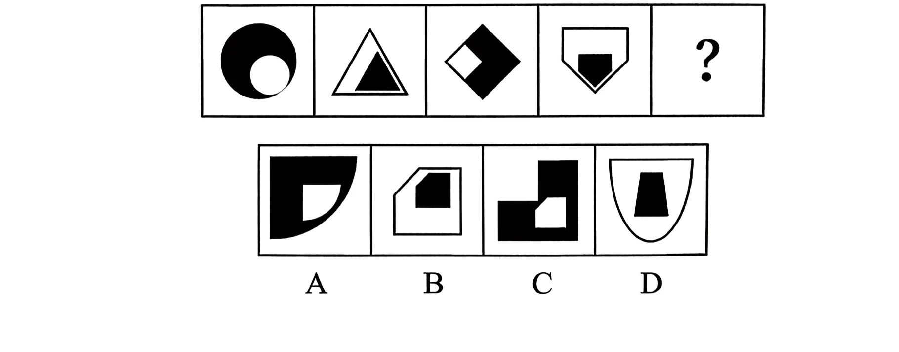
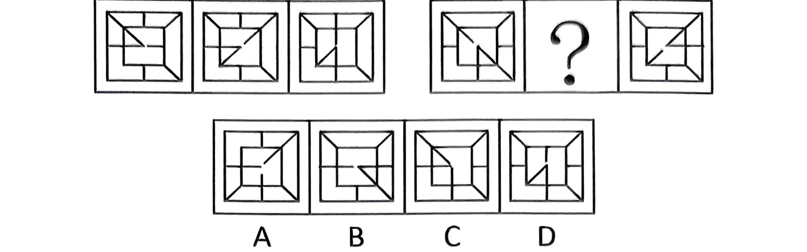
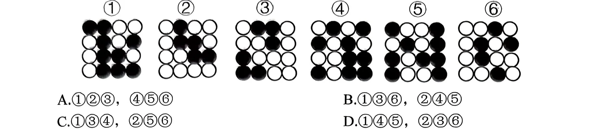

党的十八大以来，习近平总书记多次强调要有“历史耐心”。改革是久久为功的伟大事业，保持历史耐心便要有“功成不必在我，功成必定有我”的胸怀信念，“守得云开见月明”的思想准备，“板凳坐得十年冷”的实践韧劲，“轻舟已过万重山”的从容自得。关于“历史耐心”的重要论述，下列理解准确的是（）。
①坚持量变和质变的辩证统一，量变是质变的先决性前提和现实基础，没有一定的量的积累，质变不可能发生
②坚持战略和策略的辩证统一，长远的战略需要灵活的策略才能最终实现，没有策略的战略必将沦为纸上谈兵
③坚持理论和实践的辩证统一，历史规律是自然形成的，不受人的社会实践影响，实践中要不局限于一时一事一域一段
④坚持遵循历史运动规律和发挥历史主动性的辩证统一，遵循历史运动规律和发挥历史主动性是同一个历史过程的两个方面
A.①②③ B.①②④ C.①③④ D.②③④
答案点击查看答案与解析
下列与人工智能有关的说法正确的是（）。
①2024年3月，联合国大会通过了首个关于人工智能的全球决议——《抓住安全、可靠和值得信赖的人工智能系统带来的机遇，促进可持续发展》
②党的二十届三中全会提出，要完善生成式人工智能发展和管理机制，建立人工智能安全监管制度
③过去十年来，中国生成式人工智能专利申请量居世界第一，是第二名美国的6倍
④智能制造系统运维员是人力资源社会保障部最新发布的19个新职业之一
⑤数智技术是在数字化基础上融合应用机器学习、人工智能等智能技术的过程，是中国式现代化的鲜明特征
A.①②③④ B.①②④⑤ C.②③④⑤ D.①③④⑤
答案点击查看答案与解析
习近平总书记指出：“必须坚持守正创新。我们从事的是前无古人的伟大事业，守正才能不迷失方向，不犯颠覆性错误，创新才能把握时代、引领时代。”关于守正创新，以下说法有误的是（）。
A.创新是守正的基础和前提
B.创新是守正的目的和路径
C.守正创新揭示了“变”与“不变”、继承与发展的辩证统一
D.守正就是坚持实事求是，坚持真理性认识，坚持正确的政治方向
答案点击查看答案与解析
习近平总书记在纪念中国人民抗日战争暨世界反法西斯战争胜利80周年大会上的讲话中指出：“中国人民抗日战争是世界反法西斯战争的重要组成部分，中国人民以巨大的民族牺牲，为拯救人类文明、保卫世界和平作出了重大贡献。”这一历史评价所体现的马克思主义原理是（）。
A.坚持唯物史观，充分肯定中国人民抗日战争的世界历史意义
B.坚持人民立场，凸显中国人民为民族生存而战的正义性
C.坚持爱国主义，强调中华民族的独立、自由和解放
D.坚持持久抗战，最终赢得世界反法西斯战争的胜利
答案点击查看答案与解析
怎样才能当好县委书记？焦裕禄同志为县委书记树立了榜样。做县委书记，就要做焦裕禄式的县委书记。下列说法正确的有（）。
①在我们党的组织结构和国家政权结构中，县一级处在承上启下的关键环节
②廉洁自律是共产党人为官从政的底线
③县委书记要坚决搞好“政绩工程”
④县委是我们党执政兴国的“一线指挥部”，县委书记就是“一线总指挥”
A.4 项 B.3 项 C.2 项 D.1 项
答案点击查看答案与解析
2026年7月1日，庆祝中国共产党成立105周年大会在北京举行。习近平强调，105年不懈奋斗，（），锻造了强大的中国共产党。
①从根本上改变了中国人民的前途命运
②开辟了实现中华民族伟大复兴的正确道路
③展示了马克思主义的强大生命力
④深刻影响了世界历史进程
A.1 项 B.2 项 C.3 项 D.4 项
答案点击查看答案与解析
2026年7月8日，2025年度国家最高科学技术奖揭晓，（）获国家最高科学技术奖。
A.陈立泉院士、贲德院士
B.陈立泉院士、王选院士
C.李德仁院士、贲德院士
D.李德仁院士、王选院士
答案点击查看答案与解析
国家发展改革委发布我国首批国家级零碳园区建设名单，共有52个园区入选。其中山东（）入选。
①烟台丁字湾新型能源创新区
②东营垦利经济技术开发区
③潍坊滨海经济技术开发区
④威海临港经济技术开发区
A.①② B.①④ C.②③ D.③④
答案点击查看答案与解析
关于哲学的基本问题，下列说法正确的有（）。
A.哲学的基本问题是物质和存在的关系问题
B.哲学基本问题的第二方面是何者为第一性问题
C.哲学基本问题的第一方面划分了哲学的派别，是最重要的方面
D.根据何者为第一性区分了可知论和不可知论
答案点击查看答案与解析
习近平经济思想彰显了马克思主义哲学的坚定立场和科学方法，下列经济思想与其彰显的马克思主义哲学对应正确的是（）。
①努力构建新发展格局—内因与外因关系
②推动经济高质量发展—量变和质变关系
③坚持以人民为中心的发展思想一一人民历史主体地位
④处理好政府和市场关系——主要矛盾和次要矛盾关系
⑤坚持系统观念解决发展不平衡不充分问题——否定之否定
A.4 项 B.3 项 C.2 项 D.1 项
答案点击查看答案与解析
建设自贸试验区是以习近平同志为核心的党中央在新时代推进改革开放的重要战略举措。十年来，国家层面共向全国复制推广三百多项制度创新成果，形成了改革红利共享、开放成果普惠的良好局面。从哲学上看，建设自贸试验区（）。
A.表明矛盾的特殊性决定事物的不同性质
B.说明在一定条件下共性和个性可以相互转化
C.体现了普遍性寓于特殊性之中的基本原理
D.遵循了“共性——个性—共性”的认识发展规律
答案点击查看答案与解析
习近平主席强调，“做绿水青山就是金山银山理念的积极传播者和模范践行者”。对此，下列理解不准确的是（）。
A.实践“绿水青山就是金山银山”理念，推动形成绿色低碳发展方式和生活方式，是发展观的一场深刻革命
B.“绿水青山就是金山银山”的理念深刻揭示了保护生态环境就是培育传统生产力
C.如果把生态环境优势转化为生态农业、生态工业、生态旅游等生态经济的优势，那么绿水青山也就变成了金山银山
D.“绿水青山就是金山银山”的理念，源于实践又指导实践，并在实践中不断丰富和发展
答案点击查看答案与解析
党的二十大报告系统阐明习近平新时代中国特色社会主义思想的世界观和方法论，有力彰显了我们党推进马克思主义中国化时代化的理论品格。下列关于党的二十大报告的相关论述，说法错误的是（）。
A.马克思主义是我们立党立国、兴党兴国的根本指导思想
B.全过程人民民主是全面建设社会主义现代化国家的首要任务
C.深入实施人才强国战略，培养造就大批德才兼备的高素质人才，是国家和民族长远发展大计
D.推动经济社会发展绿色化、低碳化是实现高质量发展的关键环节
答案点击查看答案与解析
习近平新时代中国特色社会主义思想的核心要义是（）。
A.全面从严治党
B.经济社会高质量发展
C.坚持和发展中国特色社会主义
D.实现中华民族伟大复兴
答案点击查看答案与解析
中国共产党同民主党派合作的基本方针是（）。
A.“百花齐放、百家争鸣”
B.“一切斗争、否认联合”
C.“长期共存、互相监督、肝胆相照、荣辱与共”
D.“团结一批评一团结”
答案点击查看答案与解析
习近平总书记强调，中国将坚持推进高水平对外开放，以高质量发展全面推进中国式现代化，为各国开放合作提供新机遇。关于推进高水平对外开放，下列举措恰当的有（）。
①维护多元稳定的国际经济格局和经贸关系
②加强知识产权保护，营造良好的营商环境
③稳步扩大规则、规制、管理、标准等制度型开放
④减少对外资企业的准入限制，全面放开所有行业领域
⑤加快建设贸易强国，推动共建“一带一路”高质量发展
A.1 项 B.2 项 C.3 项 D.4 项
答案点击查看答案与解析
《中共中央关于制定国民经济和社会发展第十五个五年规划的建议》强调，实现社会主义现代化是一个阶梯式递进、不断发展进步的历史过程，需要不懈努力、接续奋斗。下列对“十五五”时期重要地位的表述，正确的是（）。
A.是开启全面建设社会主义现代化国家新征程的第一个五年
B.是基本实现社会主义现代化的决胜时期
C.是全面实现全体人民共同富裕、中国特色社会主义发展的关键时期
D.是基本实现社会主义现代化夯实基础、全面发力的关键时期
答案点击查看答案与解析
中国式现代化是中国共产党领导的社会主义现代化，既有各国现代化的共同特征，更有基于自己国情的中国特色。关于中国式现代化，下列说法错误的是（）。
A.中国式现代化是人口规模巨大的现代化
B.中国式现代化是全过程人民民主的现代化
C.中国式现代化是走和平发展道路的现代化
D.中国式现代化是物质文明和精神文明相协调的现代化
答案点击查看答案与解析
（）直接关系中国特色社会主义的性质、方向和命运。
A.中国共产党领导 B.人民当家作主
C.全面深化改革 D.全面依法治国
答案点击查看答案与解析
坚持以人民为中心，是新时代坚持和发展中国特色社会主义的根本立场，是贯穿党治国理政全部活动的一条红线。下列关于人民立场，说法正确的有（）。
①以人民为中心体现了历史唯物主义基本原理
②以人民为中心体现了人民是创造历史的真正动力，是历史发展和社会进步的主体力量
③坚持人民立场，就要始终牢记党的初心和使命
④坚持以人民为中心是因为人民是党执政的最大底气，也是党执政最深厚的根基
A.1 项 B.2 项 C.3 项 D.4 项
答案点击查看答案与解析
守正创新深刻揭示了变与不变，继承与发展的辩证统一，下列与守正创新蕴含哲理相同的是（）。
A.旋岚偃岳而常静，江河竞注而不流
B.试玉要烧三日满，辨材须待七年期
C.却是平流无石处，时时闻说有沉沦
D.新竹高于旧竹枝，全凭老干为扶持
答案点击查看答案与解析
某地法院在审理案件过程中发现，该省人民代表大会所制定的地方性法规规定与国家某部委制定的规章规定不一致，不能确定如何适用。在此情形下，根据我国《宪法》和《立法法》，下列哪种处理办法是正确的（）。
A.由国务院决定在该地方适用部门规章
B.由全国人民代表大会决定在该地方是适用地方性法规还是适用部门规章
C.由最高人民法院通过司法解释加以决定
D.由国务院决定在该地方适用地方性法规，或者由国务院提请全国人民代表大会常务委员会裁决在该地方适用部门规章
答案点击查看答案与解析
根据《公务员法》，下列说法符合规定的是（）。
A.公务员陈某因违纪被处以警告处分，四个月后被提拔
B.公务员张某因工作需要被派往某国有企业挂职
C.某事业单位员工小李被调入某行政机关担任科长
D.小陈在某行政机关从事财务工作，其爱人是该单位的领导
答案点击查看答案与解析
行政处罚法规定了行政机关及其执法人员的权利义务，下列有关说法不正确的是
A.执法人员有权要求当事人如实回答询问并协助调查或检查
B.行政机关在收集证据时，可以抽样取证
C.执法人员不得少于五人
D.行政机关在收集证据时，可以实行先行登记保存制度
答案点击查看答案与解析
王先生在4S店购买了一辆轿车，半年后去该店保养，工作人员告知王先生该车气囊电脑存在故障，需付费更换。王先生认为此为产品质量问题，要求4S店免费更换，4S店认为是王某使用不当所致。经查，该车气囊电脑不符合产品说明所述质量。对此，下列说法正确的是（）。
A.王先生有权请求4S店承担产品侵权责任
B.王先生有权请求4S店承担违约责任
C.4S店和该车生产商应当连带承担产品侵权责任
D.王先生只能请求该车生产商承担免费更换责任
答案点击查看答案与解析
县市监局认定某公司用超保质期的食品原料生产食品，根据《食品安全法》没收违法生产的食品和违法所得，并处5万元罚款。公司不服申请行政复议。下列说法正确的是（）。
A.公司可向市市监局申请行政复议，也可向县政府申请行政复议
B.公司只能向县政府提出复议
C.公司可委托1至3名代理人参加行政复议
D.对县市监局的决定，申请行政复议是向法院起诉的必经前置程序
答案点击查看答案与解析
利率的下降将（）。
A.主要会减少投资，因为这将会降低投资项目未来收益的现值
B.主要会减少投资，因为这将会提高今期建造项目成本的现值
C.主要会增加投资，因为这将会提高投资项目未来收益的现值
D.主要会增加投资，因为这将会降低今期建造成本的现值
答案点击查看答案与解析
蓝天白云是人们对美丽中国最朴素的理解，治理大气污染是生态文明建设的重要任务。要切实解决人民群众生存环境问题，综合运用各种手段治理大气污染，政府应当（）。
A.运用法律手段增加对排污费的征收力度
B.采取稳健的货币政策，中央财政安排专项资金治理重点区域的大气污染
C.转变经济发展的方式，将增加物质资源消耗作为经济发展的主要方式
D.运用经济手段增加对大气污染防治的政策性信贷支持
答案点击查看答案与解析
下列表述不正确的是（）。
A.王维的诗被誉为“诗中有画，画中有诗”
B.高适、孟浩然都是田园诗派的典型代表人物
C.李白是盛唐时期伟大的浪漫主义代表人物
D.杜牧和李商隐被称为“小李杜”
答案点击查看答案与解析
中国古代对年龄有一些特殊的表达，以下选项中按年龄从大到小排序正确的是
A.耄耋一古稀—不惑一总角
B.豆蔻一总角一不惑一古稀
C.弱冠一而立一耳顺一耄耋
D.总角一垂髫一及笄一而立
答案点击查看答案与解析
生物之间包括捕食、寄生、共生、竞争、合作等关系。下列关于生物关系的说法不正确的是（）。
A.捕食关系即一种生物以另一种生物作为食物的现象，如七星瓢虫与蚜虫
B.寄生关系即一种生物生活在另一种生物的体内或体表，并且从这种生物的体内或体表摄取营养物质维持生存的现象，如寄居蟹和海葵。
C.共生关系即两种生物生活在一起，相互有利，离开后一方或双方都难以生存的现象，如清洁虾在鱼类的体表。
D.竞争关系即两种生物生活在一起，相互争夺资源、空间等的现象，如杂草和农作物争夺养料和生存空间。
答案点击查看答案与解析
关于用电安全常识，下列说法错误的是（）。
A.发现有人触电，应首先切断电源
B.家里尽量不要同时使用多个大功率电器
C.检修电路故障时，应尽量在通电情况下作业
D.有金属外壳的用电器，金属外壳一定要接地
答案点击查看答案与解析
目前劳动力市场上，一方面企业寻觅急需的合适人才不容易，生产操作工等一线普工短缺；另一方面，部分劳动者知识技能缺乏，不能适应现代产业发展变化，求职和就业难度加大。“招人难”与“就业难”并存的现象，表明（）尚未得到根本缓解。
A.周期性就业矛盾 B.季节性就业矛盾
C.摩擦性就业矛盾 D.结构性就业矛盾
答案点击查看答案与解析
关于医学常识，以下说法正确的是（）。
A.人体温度每升高1℃,心跳频率增加5次左右
B.1 型糖尿病多发于中老年人群，2 型糖尿病多发于青年人群
C.贫血病人在输血时输入的一般为血红细胞而不是全血
D.当人受到惊吓时，肾上腺素的分泌会达到最低值
答案点击查看答案与解析
按时间先后顺序，对中国共产党的以下重大决策或论断进行排序正确的一项是
①确定把党的工作重点转向社会主义建设
②党的工作重心由乡村移到了城市
③我国社会主要矛盾已经转化为人民日益增长的美好生活需要和不平衡不充分发展之间的矛盾
④把全党工作的重点和全国人民的注意力转移到社会主义现代化建设上来
A.②①④③ B.①③②④ C.②①③④ D.①②④③
答案点击查看答案与解析
凝聚共识不是无区别的强求一律，而是有方向的启发引领；不是单向度的灌输说教，而是互动式的协商讨论；不是表面的附和敷衍，而是内心的深刻认同；不是快餐式的 ，而是长期性的润物无声。填入画横线部分最恰当的一项是：
A.一挥而就 B.信手拈来 C.一气呵成 D.立竿见影
答案点击查看答案与解析
在传统以艺术为中心的美育制度中，为了更好地将审美经验与日常经验进行，一般都是将艺术欣赏活动置于美术馆、音乐厅、博物馆等特定场所来进行。在这种艺术美育中，欣赏者需要摆脱功利性日常经验的 ，以审美静观的态度去自由地欣赏艺术。填入画横线部分最恰当的一项是：
A.区分羁绊 B.识别 禁锢
C.剥离支配 D.融汇牵绊
答案点击查看答案与解析
作文与做人、人的素质是紧密联系的。领导干部改进文风，就要不断学习。理论功底扎实了，知识积累厚实了，肚子里装的东西多了，才能 ，言之有物、地讲话、写文章。填入画横线部分最恰当的一项是：
A.游刃有余 引经据典 B.厚积薄发 深入浅出
C.驾轻就熟 滔滔不绝 D.妙语连珠 言简意赅
答案点击查看答案与解析
当地充分利用农耕梯田、红瑶文化和自然风光发展乡村旅游，同时，以旅游收入反哺古民居、古建筑保护，实施梯田景观 。厚重的红瑶民族文化、壮丽的梯田风光 、相得益彰，彰显了中国传统农耕文明中因地制宜、天人合一的智慧。填入画横线部分最恰当的一项是：
A.重建 相辅相成 B.修护 水乳交融
C.维护相映成趣 D.修复 交相辉映
答案点击查看答案与解析
数字技术的应用可以打破不同行业、企业以及市场间的信息 ，挖掘大量生产者、市场上下游主体以及消费者生产的海量数据，分析提炼出有用的信息，进行交互连接、融合使用，使数据的价值大大增加，从而 跨界融合的新业态。填入画横线部分最恰当的一项是：
A.鸿沟 衍生 B.壁垒 催生
C.屏障 派生 D.藩篱 派生
答案点击查看答案与解析
节日历久弥新的生命力，既来自于源远流长的历史传统，也得益于 的时代内涵。从尝新米、祭谷神，到跳摆手舞、办土地会，各不相同的丰收民俗正展示了农耕文明的深厚 。更要看到，传统耕作与现代农业、乡村旅游相遇，丰收硕果通过抖音电商等直播平台快速转化为真金白银的回报，新时代为传统的农耕文化带来了新填入画横线部分最恰当的一项是：
A.日新月异 积淀 面貌
B.推陈出新 根基 风向
C.守正创新 基础 契机
D.与时俱进 底蕴 气象
答案点击查看答案与解析
近年来，我国农业科技贡献率 ，但与农业生产的需求深度和广度相比，还有很大提升空间。有研究指出，我国农业科技成果的转化率只有约40%。一面是大量“ ”的科技成果，另一面是农业生产对技术进步的迫切需求。其中一个重要原因，就是农业科研活动和生产联系还不够紧密。填入画横线部分最恰当的一项是：
A.水涨船高积压 B.节节攀升 沉睡
C.遥遥领先 涌现 D.差强人意 搁置
答案点击查看答案与解析
对于在线音乐平台来说，如今的竞争不再只是围绕版权之间的博弈，而是逐渐转变为产品、服务、内容等多维度的竞争。音乐产业的链条很长，可以融入每个人的生活场景，在线音乐平台重新整合产业上下游，创新了用户参与、音乐体验的市场，也创新了音乐产业价值，是 的产业。填入画横线部分最恰当的一项是：
A.朝气蓬勃 B.突飞猛进 C.大有可为 D.异军突起
答案点击查看答案与解析
发挥市场在资源配置中的决定性作用，县乡基层政府更多是通过推进改革，为市场主体盘活利用资源提供良好的环境，同时依法对资源和环境进行保护。但政府不能，直接插手资源的开发利用。可以探索出台县乡政府负面清单，为政府职责界限，避免越权。填入画横线部分最恰当的一项是：
A.独断专行 廓清 B.鸠占鹊巢 厘清
C.大包大揽规定 D.越俎代庖划定
答案点击查看答案与解析
我们不能因为短视频的传播优势，就将其 ，而忽略这种传播方式的潜在问题。比如，通俗化不等于庸俗化，不能误导公众把短平快的快餐式知识消费等同于系统的专业知识学习过程。某些内容生产者一味追求传播效应，用夸大耸动的方式呈现知识，往往 ，误导公众；更有甚者把“碎片化学习”鼓吹为一种知识成功学神话，助长了 的社会心态。填入画横线部分最恰当的一项是：
A.合理化 断章取义 投机取巧
B.产业化 牵强附会 不求甚解
C.神圣化 移花接木 好大喜功
D.万能化 以偏概全 急功近利
答案点击查看答案与解析
小说与影视剧之间具有 ，它们都属于叙事艺术，都有一定的故事性。这为两者的转化提供了 的条件。因此，改编小说始终是影视剧制作的一个重要路径。影视创作者首先瞄准的是一些经典的小说，它们经过时间和读者的检验，有广泛的 ，这为改编提供了优质的剧本基础，也对影视剧起到了天然的宣传作用。填入画横线部分最恰当的一项是：
A.关联性 优越 认可度
B.亲缘性 便利 知名度
C.交融性 有利 影响力
D.相通性 合适 凝聚力
答案点击查看答案与解析
近年来，每到热门档期，都会有热门电影的“资源”在第一时间被泄露，且不乏通过网络渠道公开售卖的例子。此类行为每次都会被声讨，但至今依然原因为何？有利可图自不待言，若非其中存在暴利，就不会有人 ，总想着歪门邪道。填入画横线部分最恰当的一项是：
A.大行其道孤注一掷 B.屡禁不止 铤而走险
C.层出不穷火中取栗 D.变本加厉 明火执仗
答案点击查看答案与解析
在族群认同上，欧洲蛮族史力图彻底 本族群与罗马的关系，寻找自己族群遥远的始祖神话，证明自己是罗马世界的“外人”。而中国五胡史书都试图论证部族起源与华夏有着 的关系，绝大部分五胡君主都想从地缘血缘上自证为炎黄后裔，是华夏的亲人。填入画横线部分最恰当的一项是：
A.理清 一脉相承 B. 摆脱 错综复杂
C.探明密不可分 D.切割千丝万缕
答案点击查看答案与解析
70余年来，中国城市出现天翻地覆的巨变，超过了历史上任何时期，城市在国家发展中的地位和作用越来越重要，成为 区域发展的中心和强劲引擎，部分重要城市已经跻身世界顶级城市行列，对世界政治、经济和文化发展产生了重要影响。但是新中国城市史的研究却 于新中国城市的发展，在很多研究领域还处于 的状态，呼唤着学者们更加深入系统开展新中国城市史研究的学术自觉。填入画横线部分最恰当的一项是：
A.带动滞后 无人问津
B. 促进 局限 鲜为人知
C.驱动落后 后继无人
D.引导受困束之高阁
答案点击查看答案与解析
近年来，随着乡村治理的深入推进，农村地区普遍制定了村规民约，取得了良好的效果，但少数地方在制定村规民约时也还存在一些问题。一是 ，有的没有与时俱进，与当前的要求结合得不够紧密；二是不合实际，有的同质化比较严重，,放之四海皆可用，没有自己的特点；三是不接地气，有的空洞无物、语言生硬，讲的是大道理，不能
填入画横线部分最恰当的一项是：
A.因循守旧 千篇一律 口耳相传
B.陈陈相因 生搬硬套 家喻户晓
C.闭门造车 东拼西凑 铭记于心
D.不合时宜 大同小异深入人心
答案点击查看答案与解析
微传播平台使信息传播具有更强的时效性，发布者上传信息以后，关注者可以在第一时间获取信息。与此同时，微传播平台没有发布时间与发布频次方面的限制，发布者可以在任何时间多次发布不同内容，而且发布者可以通过微传播平台以图像、视频等形式发布信息，丰富了信息发布与传播的内容和形式。微传播平台具有互动机制，信息发布者与接收者可以进行交流互动。结合微传播平台的优势来看，将微传播平台应用于高校思想政治教育有助于提升思想政治教育的时效性、广泛性和交互性，有效扩充思想政治教育内容、提升思想政治教育频次，多个方面共同发力提升高校思想政治教育质量。这段文字意在强调：
A.用微传播平台提升高校思政教育效果的路径
B.应当充分借助新媒体技术打造思政教育平台
C.微传播平台可用在高校思政教育的主要原因
D.可通过微传播平台来助推高校思想政治教育
答案点击查看答案与解析
针对无人机集群，要注意结合空间配置实施频谱管理，使各频段雷达和传感器不发生互扰的同时，能够在复杂的电磁环境中探测、识别各类无人机集群目标。另外，还要通过网络实现无人机集群探测预警信息的高度共享，融合、集成战场环境信息和敌我态势信息以及规划命令等多个数据源获取的信息，在地理信息基础上叠加敌、我、友及中立部队的位置和运动轨迹，以及反无人机集群的设施或武器装备的有效控制区域等信息，形成无人机集群探测的综合态势图，为优先打击最有价值的无人机集群目标提供支撑。这段文字意在说明：
A.实施频谱管理能够识别无人机集群目标
B.可通过融合信息形成无人机集群态势图
C.如何精确化识别和锁定无人机集群目标
D.应从多方面着手去打击无人机集群目标
答案点击查看答案与解析
环境会对人们的DNA进行化学修饰，从而打开或关闭基因，降低或提高某些基因的活性。不过，表观遗传学在帮助人们适应高海拔生活方面扮演着什么样的角色仍不清楚。因此，来自秘鲁、德国和美国的一组研究人员观察了一种被称为甲基化的表观遗传过程，在这个过程中，细胞向DNA添加一种名为甲基群的化学标签。研究人员研究了3组人：出生并生长在海拔3000米以上地区的盖丘亚人、出生在高海拔地区但年轻时迁移到海平面地区的盖丘亚人，以及出生前就迁移到海平面地区的盖丘亚人。这段文字接下来最可能讲的是：
A.对甲基化的表观遗传变化过程的介绍
B.高海拔生活对盖丘亚人甲基化的影响
C.高海拔生活改变盖丘亚人基因的方式
D.关于环境和基因关联的最新研究进展
答案点击查看答案与解析
达尔文注意到，自然选择理论无法解释雄孔雀的尾巴、雄鹿的鹿角，以及为什么对有的物种来说其雄性比雌性要大得多等问题。于是他提出：物种会对能增加其获得交配和繁殖机会的性状进行性选择。他认为，性选择性状可以通过性比的不平衡来解释。当一个物种的雄性可选择的雌性数量较少时，它们将不得不更加努力地从这些少量的异性中去锁定一个作为配偶， 。后来的研究发现，性选择和性比之间的确存在一种联系，但性选择最为明显的时候并不发生在潜在配偶数量稀少时，而是在潜在配偶数量充足时。填入画横线部分最恰当的一项是：
A.而这种竞争推动了性选择
B.不过它们的选择非常有限
C.而性选择加剧了雄性间的竞争
D.此时性选择性状表现最为明显
答案点击查看答案与解析
古气候变化研究显示，距今2800年前存在全球范围的气候突变事件，这次气候的冷干化导致中原地区粮食产量降低，土地难以满足先民的生存需求，人地矛盾突出，中原地区也由稳定的西周王朝向社会动荡、战争频发的东周王朝过渡。当时中国的经济中心在中原，这次事件很可能导致先民们从中原地区向当时的边疆地区迁徙，其中也包括江苏沿海地区。伴随着中原地区的人群迁徙，中原地区具有小麦和粟黍旱作农业技术的先民也在西周一东周过渡阶段向东、南迁徙，与本地的稻作农业人群融合，在江苏沿海地区形成了稻一旱混作的农业模式。这段文字最可能回答的问题是：
A.为何江苏沿海地区在距今2800年前诞育了灿烂的文明
B.小麦和粟黍等作物缘何能在古代江苏沿海地区发展起来
C.江苏沿海地区与中原地区的古代农业文明具有何种相似
D.为什么江苏沿海地区的农业与南方的其他地区迥然不同
答案点击查看答案与解析
1.7亿独生子女照顾者群体，犹如沙漏最细的管道部分，最脆弱又最承重，他们不得不连接起代表着祖辈和晚辈的两个“玻璃球”。沙漏中的沙子就如照顾者的付出，一端的玻璃球涌入了沙子必然意味着另一端玻璃球中的沙子开始减少，而那些代表付出和照顾的沙子只会留在两端的玻璃球，极少能够停留在连接的管道之中。人们每每谈及这一话题，都会优先考虑两个解决思路，即如何做好社会养老和社会育小，以缓解相关家庭照顾者的生存压力。但想要有效缓解独生子女照顾者群体的压力，除了解决养老和育小问题远远不够，还应该推动政策去直接关照并扶持照顾者群体自身，而这是相对而言容易被忽视的部分。这段文字意在说明：
A.如何有效化解独生子女照顾者群体所处的困境
B.独生子女照顾者群体面临养老育小的双重压力
C.构建照顾者群体的社会扶持体系需要提上日程
D.在政策上应加强对独生子女照顾者群体的帮扶
答案点击查看答案与解析
新的研究不断证明，人工智能模型在精神疾病的预测诊断、干预治疗等方面都表现出优于传统诊疗模式的潜力。脑电、心电、肌电等电生理信号都与人的精神状态相关，目前的采集技术已经能够实现“降噪”采集。甚至鼾声、微表情、步态等人类感官难以察觉规律或精准捕捉的行为信号都可以用作人工智能判读精神健康的依据。信息技术让很多之前难以探测到的“蛛丝马迹”，可以被甄别、掌握，高效利用。除此之外，人工智能在治疗方面也有独特优势。医生治疗时需实时得到反馈才能及时调整治疗方案，人工智能辅助诊断技术提供的及时诊疗“反馈”，能够提升医生对症施治的效果。下列说法与原文不符的是：
A.在精神疾病诊疗上人工智能比传统诊疗模式或更有优势
B.电生理信号与行为信号都可帮助人工智能判断精神健康状况
C.医生可以根据人工智能提供的实时反馈来修改治疗方案
D.信息技术对精神疾病诊疗最大帮助在于可微观探测行为信号
答案点击查看答案与解析
在传统的文科建设模式下，很多教师科研能力虽然较强，但主要局限于基础理论研究，应用对策研究的问题意识和研究水平还不够，导致高校智库建设推进缓慢或水平不高。新文科建设推动高校文科“走出象牙塔”，鼓励教师把自己的学术研究融入现实的经济社会发展中，把文章写在中国大地上，这对于整体提升高校教师的科研水平特别是应用对策研究水平大有裨益。高校智库建设需要抓住新文科建设的好时机，发掘和培养高校智库人才，提升高校教师的应用对策研究水平，从根本上促进高校智库的高质量发展。这段文字意在说明：
A.高校智库建设要以解决实际问题为已任
B.新文科建设有利于提高教师科研水平
C.新文科建设赋能高校智库高质量发展
D.传统文科建设迫切需要转向新文科建设
答案点击查看答案与解析
与纯理论研究不同，伦理学研究既离不开求真的天性，又离不开向善的渴求。因为伦理学是一门实践哲学，它不仅涉及纯粹理性的认知，还涉及实践理性的认知，尤其涉及借助意志使认知走向生活的实践活动。伦理学研究的根本任务不只是认识生活，更是改造生活。苏格拉底之所以追问“我们应该过什么样的生活”，孔子之所以通过“仁学”重新诠释礼乐制度，都是为了解决所处社会中出现的道德问题。从这个意义上说， ，是伦理学研究的根本推动力。填入画横线部分最恰当的一项是：
A.把理论研究和现实研究结合起来
B.在实践中去追求真理、寻求智慧
C.理解和应对现实生活中的道德问题
D.为现实生活问题提供理论解决方案
答案点击查看答案与解析
①所以古物学和金石学都被视作考古学的前身，而不被认为是考古学
②中国早在古代就对古代青铜器和石刻碑碣进行著录和考释，当时的皇家贵胄、文人士大夫希望通过这些实物追寻传统，形成了以“证经补史”为特征的金石学
③此后金石学一直发展下去，到清代达到鼎盛
④在西方考古学诞生之前，文艺复兴时期的欧洲曾有过一个古物学的阶段
⑤但是，古物学和金石学基本上都以传世品为研究对象，传世品大多世代相传，真伪难辨，出土地点不明确，作为史料的科学研究价值非常有限
⑥那时，人们热衷于收集和研究古希腊、古罗马时代的艺术品和镌刻在器物上的铭文，借以了解古代社会的历史将以上6个句子重新排列，语序正确的是：
A.②①⑤⑥④③ B.②④⑤③①⑥
C.④②③①⑥⑤ D.④⑥②③⑤①
答案点击查看答案与解析
藤壶会分泌出一种具备粘性的藤壶胶，这种胶主要由多种蛋白质成分组成，具有极强的粘合力和防水能力。藤壶胶的强粘合性使藤壶不仅能牢固地附着在礁石、船体上，还能附着在其他生物表面，如红树、贻贝外壳等。藤壶胶是藤壶腺介幼虫及其成体与基底材料表面黏附的主要物质。人们通常把藤壶个体在正常生长发育过程中所分泌的胶黏物称为初生胶，而已附着的藤壶成体在修复自身破损结构时所分泌的胶质称为次生胶。藤壶胶与多种基材表面黏接后都能呈现较大的内聚强度，且其具有非常优异的抗生物降解性。藤壶胶是一种极具开发价值的生物粘合剂。关于藤壶胶，这段文字未提及：
A.产生过程 B.应用前景 C.优势性能 D.主要成分
答案点击查看答案与解析
在中国史前社会复杂化进程中，主持宗教祭祀的巫大都为男性。他们既是氏族、部落中掌握神权、军权的首领，还是聚落秩序及原始道德的维护者及知识文化的掌握者。随着史前社会复杂化进程，巫师兼首领的贵族群体以神权和王权的力量，逐步占有并控制公共资源，由此促进了早期分层社会向早期国家的转型。商周时，专门的巫师、贞人群体逐渐分化为巫、祝、卜、史等角色。西周时期，传统“巫王合一”“巫政合一”中的巫师职能逐渐融入国家祭祀系统与朝廷礼乐制度，而民间的巫师等则延续于乡里社会中，成为古代民间宗教的承载者。这是一篇文章的引言，这篇文章最可能介绍的是：
A.巫师在中国民间的宗教和文化功能
B.中国早期原始宗教的发展演变过程
C.中国文明起源中的巫及其角色演变
D.巫与中国文明起源和国家形成的关联
答案点击查看答案与解析
我国经济已转向高质量发展阶段，经济社会发展必须以推动高质量发展为主题。推动高质量发展需要统筹发展和安全，安全是发展的前提，发展是安全的保障。统筹发展和安全，增强忧患意识，做到居安思危，是我们党治国理政的一个重大原则。党的十八大以来，以习近平同志为核心的党中央坚持总体国家安全观，从容应对国内外形势的深刻复杂变化，着力破解各种矛盾和问题，发展的安全保障能力持续提升。新征程上，世界百年未有之大变局加速演进，我国发展面临的环境更加复杂严峻，必须坚持底线思维，推进国家安全体系和能力现代化建设，有效防范化解各类风险挑战，实现高质量发展和高水平安全的良性互动，确保全面建设社会主义现代化国家顺利推进。这段文字意在强调：
A.实现高质量发展需要秉持基本的底线思维
B.推动高质量发展须坚持统筹好发展和安全
C.贯彻国家安全观有助于现代化的稳步推进
D.在新征程上更应该提高国家安全保障能力
答案点击查看答案与解析
算法的逻辑机械且强势，而如果社会的协调机制过分滞后，那么则会形成新的“算法鸿沟”与社会歧视。以往的知识鸿沟、数字鸿沟更多的是由于社会结构中的教育程度、年龄层次、经济地位等要素使得社会资源分配不均，而“算法鸿沟”则有可能在分配制度的上游，通过人口数据、用户画像、使用习惯、社交关系等先期就预置了鸿沟。而随着算法回还往返于社会与系统之间，那些有机会获得工作经验、拥有学习机会、算法素养较高的群体，同那些缺少机会、相对弱势的群体之间的差距将不断拉大。而这样的差距经年累月沉积，将加重阶层固化，形成算法特权和垄断力量。这段文字主要介绍：
A.算法社会的协调机制与社会歧视
B.算法对加剧社会阶层固化的作用
C.“算法鸿沟”产生的原因及其影响
D.算法“纠偏”机制确立的深层原因
答案点击查看答案与解析
①病毒体型微小，但它们在生态系统中无处不在
②一直以来，病毒似乎处于食物链之外，只顾感染并蚕食生物，而不会被生物当成食物，这看上去不合常理
③据研究估算，世界上病毒的数目比宇宙中的恒星总数还要多1亿倍，总重量则与250亿人的体重相当
④因此，生物学家一直在寻找噬食病毒的生物
⑤几乎所有的物种，都会被病毒感染
⑥但有趣的是，很长一段时间内，科学家从未找到一种以病毒为食的生物将以上6个句子重新排列，语序正确的是：
A.⑤①③②⑥④ B.①③⑤⑥②④
C.⑤①⑥③②④ D.①⑥④③⑤②
答案点击查看答案与解析
在7×7的队列中，先随机给一个队员戴上红绶带，再给另一个队员戴上蓝绶带，要求戴两种颜色绶带的这两位队员不在同一行也不在同一列。问有多少种戴法？
A.1048 B.1374 C.1764 D.1858
答案点击查看答案与解析
汽车销售店本周共卖出36辆小汽车，其中燃油动力汽车销量比混合动力汽车销量的2倍少3辆，比纯电动汽车销量的3倍多1辆。每辆混合动力汽车和纯电动汽车分别可以获得政府补贴3万元和9万元，问该销售店本周卖出的混合动力汽车和纯电动汽车总共可以获得多少万元政府补贴？
A.87 B.81 C.75 D.72
答案点击查看答案与解析
池中原有一定量的水，如果用一台抽水机向池内灌水，6小时可灌至半满；如用3台抽水机灌水，8小时可灌满。如将池中水排空，用4台抽水机灌水几小时能灌满？
A.6 B.7 C.8 D.9
答案点击查看答案与解析
2014 年父亲、母亲的年龄之和是年龄之差的23 倍，年龄之差是儿子年龄的，5年后母亲和儿子的年龄都是平方数。若父亲的年龄比母亲大，则2014年父亲的年龄是多少？（年龄都按整数计算）
A.36岁 B.40岁 C.44岁 D.48岁
答案点击查看答案与解析
王大妈与李大妈两人分别从小区外围环形道路上A、B两点同时出发相向而行。走了5分钟两人第一次相遇，接着走了4分钟后，李大妈经过A点继续前行，又过了26分钟两人第二次相遇。问：李大妈沿小区外围道路走一圈需要几分钟？
A.54 B.59 C.60 D.63
答案点击查看答案与解析
一条街上有90棵树，其中有些树已经挂上了彩灯，这时，要选择在一棵未挂彩灯的树上悬挂红旗，有趣的是，无论将红旗挂在哪棵树上都与挂了彩灯的树相邻，那么至少有多少棵树挂了彩灯？
A.35 B.30 C.25 D.20
答案点击查看答案与解析
小李和小张参加七局四胜的飞镖比赛，两人水平相当，每局赢的概率都是 50%，如果小李已经赢2局，小张已经赢1局，最终小李获胜的概率是：

A. B. C. D.
答案点击查看答案与解析
某社区拟对一块梯形活动场地进行扩建。经测算，如果将梯形的上底边增加1米，下底边增加1米，则面积将扩大10平方米；如果将梯形的上底边增加1倍，下底边增加1米，则面积将扩大55平方米；如果将上底边增加1米，下底边增加1倍，
则面积将扩大105平方米。现拟将梯形的上底边增加1倍还多2米，下底边增加3倍还多4米，则面积将扩大：
A.280 平方米 B.380 平方米
C.420 平方米 D.480 平方米
答案点击查看答案与解析
某一年中有53个星期二，并且当年的元旦不是星期二，那么下一年的最后一天是：
A.星期三 B.星期二
C.星期一 D.星期四
答案点击查看答案与解析
一款手机有两个型号，存储容量分别为64G 和256G，销售价分别为每台1600元和2000元，其他无区别。已知64G存储器的成本是256G存储器的一半，是单台手机其他成本之和的 20%，而销售一台 256G 手机的利润比 64G 手机高 150 元。问：销售64G和256G手机各10万台，利润为多少万元？
A.3500 B.5600 C.6400 D.7000
答案点击查看答案与解析
从所给四个选项中，选择最合适的一个填入问号处，使之呈现一定规律性：

答案点击查看答案与解析
从所给四个选项中，选择最合适的一个填入问号处，使之呈现一定规律性：

答案点击查看答案与解析
从所给四个选项中，选择最合适的一个填入问号处，使之呈现一定规律性：

答案点击查看答案与解析
从所给四个选项中，选择最合适的一个填入问号处，使之呈现一定规律性：

答案点击查看答案与解析
从所给四个选项中，选择最合适的一个填入问号处，使之呈现一定规律性：

答案点击查看答案与解析
把下面的六个图形分为两类，使每一类都有各自的共同特征或规律，分类正确的一项是：

A.①②③，④⑤⑥ B.①②④，③⑤⑥
C.①②⑤，③④⑥ D.①④⑥，②③⑤
答案点击查看答案与解析
把下面的六个图形分为两类，使每一类都有各自的共同特征或规律，分类正确的一项是：

A.①②③，④⑤⑥ B.①③④，②⑤⑥
C.①②⑥，③④⑤ D.①④⑤，②③⑥
答案点击查看答案与解析
把下面的六个图形分为两类，使每一类都有各自的共同特征或规律，分类正确的一项是：

A.①②③，④⑤⑥ B.①③⑥，②④⑤
C.①③④，②⑤⑥ D.①④⑤，②③⑥
答案点击查看答案与解析
下列 4 个外表面展开图构成的正方体中与其他3 个不同的是：
答案点击查看答案与解析
左边的立体图形是由①、②和③组成的，下列哪项可以填入问号处：

答案点击查看答案与解析
防御型创新是指由于外部环境的变化对系统的存在和运行造成了某种程度的威胁，为了避免威胁或由此造成的系统损失扩大，系统在内部展开的局部或全局性调整。根据上述定义，下列属于防御型创新的是：
A.企业受到强有力的竞争对手的挑战，难以抵挡，造成上半年的经营业绩出现负增长
B.某企业近期出现产品质量下降，销量下滑的情况，公司成立检查组调查原因
C.某企业推出新的产品，以充分挖掘和利用竞争对手产品线中的缺口，成功进入新的细分市场
D.宏观经济严重不景气、通胀严重，企业高层领导者面对困境，选择前景良好的经营领域进行投资，实施有秩序的资源转移
答案点击查看答案与解析
行政给付又称行政物质帮助，是指行政机关对公民在年老、疾病或丧失劳动能力等情况或其他特殊情况下，依照有关法律、法规、规章或政策等规定，赋予其一定的物质权益（如金钱或实物）或与物质有关的权益的具体行政行为。根据上述定义，下列不属于行政给付的是：
A.给养老院经费资助
B.支付残疾人摩托司机行政赔偿金
C.支付下岗职工最低生活保障费
D.支付牺牲人员抚恤金
答案点击查看答案与解析
溢出效应，是指一个组织在进行某项活动时，不仅会产生活动所预期的效果，而且会对组织之外的人或社会产生的影响。简而言之，就是某项活动要有外部收益，而且是活动的主体得不到的收益。根据上述定义，下列体现了溢出效应的是：
A.上海世博会，不仅对上海的经济发展、基础建设有很大的促进作用，同时也改善了上海的生态环境，提高了文化发展水平
B.一家跨国公司发明了一项新技术，随之该技术被竞争企业复制或学习，一段时间以后，相关市场中所有的产品和服务都会体现这类技术
C.北京市出台最严楼市调控政策，形成限购、限贷、限价、限售以及限商的“五限模式”，导致房产交易量下降，房价有所回落
D.美国硅谷，聚集了几十家全球IT巨头和数不清的中小型高科技公司，成为世界著名的电子工业和计算机业王国
答案点击查看答案与解析
差异容忍指的是对于所属群体个别成员的与众不同常常给予善意的理解；卓越排斥指的是对于非已群体成员的优秀表现常常给予恶意的理解。根据上述定义，以下哪项属于差异容忍？
A.小陈年纪轻轻几乎两年升职一次，尽管他非常优秀，但是比他优秀的人多的是，他一定背后有人，否则怎么总是提拔他
B.小赵这次发挥失常，致使在这次预赛中我们团队未能进入前5名，不过，这对于我们团队也是好事，免得训练时被其他队盯上
C.小王这次捐款比科室其他成员少得多，可见他近期一定在经济上遇到了些困难
D.她在去年四个季度的绩效评比中全都是第一，还不就是为了出风头，我倒要看看她能坚持多久
答案点击查看答案与解析
诉诸怜悯是一种逻辑谬误，当论证者只通过唤起读者或听者的同情心来支持其结论时，就会产生诉诸怜悯。根据上述定义，下列哪项属于诉诸怜悯？
A.这部新能源汽车完全由我国自主研发，是我们自己的汽车，买它就对了
B.如果本次竞选成功，在今后的工作里我会以集体利益为重，真诚对待每一个人
C.好心人，我的家乡遭了旱灾，不得已出来乞讨，所以，给我口吃的吧
D.法官阁下，我年迈的母亲和襁褓中的孩子都在等我回家，所以，判我无罪吧
答案点击查看答案与解析
税收激励是指政府在税制设计和税收征管过程中，运用多种手段，通过税负的调整，诱导微观经济主体的行为选择，鼓励纳税人发生或不发生，参与或不参与某种经济行为，以实现政府社会经济协调发展的战略目标。根据以上定义，下列不属于税收激励的是：
A.在产品研发阶段，设备费很高，此时对其加速折旧进行税收优惠
B.对遭受风、水、火、震等严重自然灾害的纳税人给予税收优惠
C.在产品中间阶段，对资金的需求依赖性强，此时对投资抵免进行税收优惠
D.在产品试验阶段企业的风险仍然很大，此时对亏损结转进行税收优惠
答案点击查看答案与解析
云计算指的是通过网络“云”将巨大的数据计算处理程序分解成无数个小程序，然后，通过多部服务器组成的系统进行处理和分析这些小程序得到结果并返回给用户。网格计算研究如何把一个需要非常巨大的计算能力才能解决的问题分成许多小的部分，然后把这些部分分配给许多计算机进行处理，最后把这些计算结果综合起来得到最终结果。二者区别在于云计算是以相对集中的资源，运行分散的应用；而网格计算则是聚合分散的资源，支持大型集中式应用。根据上述定义，下列属于网格计算的是：
A.某互联网公司推出在线存储服务，用户不管在何地，只要登录自己的账号，就可以管理、编辑自己存储的在线文件
B.某国利用大型超级计算机进行地球大气循环监测和分析、温室效应预测、地壳及地震监测和预报等大规模计算
C.某在线购票软件在长假出行高峰期间，将需要海量计算的余票查询环节外包给了某企业，自己只需处理轻量级的核心业务
D.某科研组织利用互联网上成千上万志愿者的计算机的闲置计算能力寻找超过1000万位数字的梅森质数
答案点击查看答案与解析
单位环境犯罪，是指公司、企业、事业单位、机关、团体违反环境保护法规，故意或过失地不合理开发利用自然资源，或者超标准排放各种废弃物，造成严重损害后果或有造成严重损害危险的以及抗拒环保行政监督、情节严重的行为。根据上述定义，下列属于单位环境犯罪的一项是：
A.某造纸厂超标排放污水，受到环保部门的处罚，经停业整顿并通过检查后又重新开工
B.某村民经常擅自进入保护区盗猎珍稀野生动物，再高价售出
C.某伐木场生产规模较大，每年按照规定砍伐大量树木后进行等量的树苗栽种
D.某纺织厂在化纤生产过程中产生的工业废气严重危及了周围居民的生命健康
答案点击查看答案与解析
禀褒效应：是指当个体一旦拥有某项物品、奖励或者荣誉之后，那么他对该物品、奖励或者荣誉的价值评价要比未拥有之前明显提高。下列属于禀褒效应的是：
A.小李花了150万元买了一套精装修的房屋，尽管小区房价在降，但他觉得自己的房子结构合理、聚气，交通方便，至少值200万元
B.小唐经过精心挑选购买了4支基金，但是自从他买后，这几支基金在很长一段时间不停地下跌，而他坚信这些基金一定会大涨获得超值回报
C.小王的同学赵某的论文在某次国际会议上获奖，小王逢人便说，这个国际会议奖项的国际认可度极高，能够获得该奖非常不容易
D.由于工作成绩突出，公司奖励给小陈价值10万元的一块定制金表，同事愿意出价15万元收藏，但是小陈毫不犹豫地拒绝了
答案点击查看答案与解析
次生环境问题是由人类活动引起的，分为环境污染和生态破坏两大类。环境污染是人类直接或间接地向环境排放超过其自净能力的物质或能量，使环境质量恶化，破坏了生态系统和人们的生存环境；生态破坏是人类活动直接作用于自然环境引起的。根据上述定义，下列属于环境污染的是：
A.水资源在地区分布不均，进一步加剧了水紧张状态
B.植被破坏引起的水土流失，污染水质，影响生态平衡
C.大面积开垦草原引起的土地荒漠化，使土地面积和产出量降低
D.汽车排出的碳氢化合物在紫外线作用下生成有害的浅蓝色烟雾
答案点击查看答案与解析
吞云：吐雾
A.捕风：捉影 B.独霸：一方
C.独辟：蹊径 D.一目：十行
答案点击查看答案与解析
阳光：取暖器
A.蜡烛：手电 B.水笔：铅笔
C.清风：风扇 D.老鼠：鼠标
答案点击查看答案与解析
毛线：毛衣：保暖
A.面粉：蛋糕：庆祝 B.扇子：蚊香：驱蚊
C.玻璃：墨镜：避光 D.纸张：窗花：装饰
答案点击查看答案与解析
扉页：封面：书籍：杂志
A.主板：屏幕：手机：电脑
B.螺纹：螺柱：螺栓：螺母
C.硅胶：金属：锅铲：炒勺
D.眼睛：鼻子：身体：人体
答案点击查看答案与解析
义务教育 对于（） 相当于（）对于 便捷
A.方便；电话 B.治愈；台灯
C.免费；快餐 D.全面；门诊
答案点击查看答案与解析
李佳、贾元、夏辛、丁东、吴悠5位大学生暑期结伴去皖南旅游，对于5人将要游览的地点，他们却有不同想法。李佳：若去龙川，则也去呈坎；贾元：龙川和徽州古城两个地方至少去一个：夏辛：若去呈坎，则也去新安江山水画廊；丁东：若去徽州古城，则也去新安江山水画廊；吴悠：若去新安江山水画廊，则也去江村。事后得知，5人的想法都得到了实现。根据以上信息，上述5人游览的地点，肯定有：
A.龙川和呈坎 B.江村和新安江山水画廊
C.龙川和徽州古城 D.呈坎和新安江山水画廊
答案点击查看答案与解析
近年来，鸟类与建筑物相撞已经成为导致鸟类死亡的重要因素。有专家指出，夜晚的建筑物灯光是导致鸟类撞击建筑物的主要因素，对鸟类尤其是迁徙的鸟类而言，它们需要依靠一些环境信号辅助飞行，而建筑物灯光一方面会使鸟类失去方向感，另一方面也对鸟类有吸引作用，鸟类在失去方向感并聚集在建筑物周围时，会面临很大的撞击风险。因此，在每年鸟类迁徙的高峰期夜晚关闭建筑物外灯和内部照明就能杜绝鸟类撞击建筑物的发生。以下哪项如果为真，最能削弱上述结论？
A.有研究发现，当关闭建筑物外灯后，每年在迁徙中死亡的鸟类数量没有明显减少
B.建筑物外灯是城市亮化工程的重要组成部分，而城市亮化工程又是影响城市环境景观的重要因素
C.白天在太阳光的照射下，建筑物的玻璃幕墙因其透明或反光的特性也会让鸟类对环境做出错误判断从而撞上建筑物
D.有环保组织在推行一个“熄灯计划”，在候鸟迁徙过程中的夜晚熄灭国营大楼的灯光，有多个城市参与到了该计划中
答案点击查看答案与解析
肥胖及肥胖相关的慢性炎症、代谢综合征是威胁生命的慢性疾病。研究发现，在肥胖者脂肪组织中存在大量CD146+巨噬细胞，而且慢性炎症患者和代谢综合征患者体内也有CD146+巨噬细胞的大量累积。研究人员据此指出，CD146+巨噬细胞的大量累积引发了肥胖及肥胖相关的慢性炎症、代谢综合征，这为治疗此类疾病开辟了新方向。以下哪项如果为真，最能支持上述结论？
A.CD146+巨噬细胞在机体瘦的状态下约占脂肪基质部分的5%，在肥胖期间则高达 50%
B.对肥胖及肥胖相关的慢性炎症、代谢综合征患者靶向清除CD146+巨噬细胞后可显著减轻体重，并缓解病症
C.肥胖相关的慢性炎症可能会诱发胰岛素抵抗，代谢综合征患者一般也存在胰岛素抵抗
D.小鼠模型显示，当CD146+巨噬细胞大量累积时，小鼠发生肥胖、慢性炎症及代谢综合征的风险加大
答案点击查看答案与解析
甲：知难行易，知然后行。乙：不对。知易行难，行然后知。以下哪项与上述对话方式最为相似？
A.甲：知人者智，自知者明。乙：不对。知人不易，知已更难。
B.甲：批评他人易，批评自己难：先批评他人后批评自己。乙：不对。批评自己易，批评他人难；先批评自己后批评他人。
C.甲：做人难做事易，先做人再做事。乙：不对。做人易做事难，先做事再做人。
D.甲：不破不立，先破后立。乙：不对。不立不破，先立后破。
答案点击查看答案与解析
近年来，一种新的婚姻形式“两头婚”在江浙一带渐成气候。所谓的“两头婚”，既不是男娶女嫁，也不属于女招男入赘，男女双方皆是婚娶婚嫁，夫妻两头走，而且一般会生育两个小孩，分别随父母的姓。“两头婚”不仅规避了婚前彩礼、嫁妆等“高频争议话题”，还满足了原生家庭和新家庭的实际需要。有人认为，比起传统婚姻形式，“两头婚”的形式更受年轻人青睐。以下陈述如果为真，哪项无法质疑上述观点？
A.随着婚姻观念的开放、生命科技的成熟，“我有伴侣，但不结婚”将成为时尚之选
B.与原生家庭保持黏性使“两头婚”家庭失去了独立性，而这种独立性恰恰是很多年轻人所看中的
C.“两头婚”形式下，共同财产变得模糊，容易导致3个家庭之间的财产混同，不少年轻人不愿承担这种风险
D.“两头婚”中的家庭社会关系与传统的家庭社会关系概念完全不同，大部分地区的人目前都不能接受
答案点击查看答案与解析
今天的教育质量将决定明天的经济实力。PISA 是经济合作与发展组织每隔三年对15岁学生的阅读、数学和科学能力进行的一项测试。根据2022年测试结果，中国学生的总体表现远超其他国家学生。有专家认为，该结果意味着中国有一支优秀的后备力量以保障未来经济的发展。以下哪项如果为真，最能支持上述专家的论证？
A.中国学生在15岁时各项能力尚处于上升期，他们未来会有更出色的表现
B.未来经济发展的核心驱动力是创新，中国教育非常重视学生创新能力的培养
C.在其他国际智力测试中，亚洲学生总体成绩最好，而中国学生又是亚洲最好的
D.这次PISA测试的评估重点是阅读能力，能很好地反映学生的受教育质量
答案点击查看答案与解析
某市消保委发布声明，该市某网约车平台上线的“出租车感谢费”模块，实则为出租车的加价功能，涉嫌侵害了消费者的合法权益。消保委正在考虑提起公益诉讼，维护消费者的合法权益。对此，网约车平台回应称，设置出租车感谢费，是考虑到
春节期间供需紧张，添加感谢费能鼓励司机坚持服务，乘客可以自由选择给还是不给。为使网约车平台的回应成立，以下必须为真的一项是：
A.出租车感谢费推而广之不会使线下手招车变得更加困难
B.春节期间不给出租车感谢费的乘客难以通过网约车平台叫到车
C.添加出租车感谢费与不添加感谢费的乘车同一时间地点叫到车的机会均等
D.上线“感谢费”模块前，平台进行了民意调查，得到了用户的理解和支持
答案点击查看答案与解析
某部门抽检了肉制品、白酒、乳制品、干果、蔬菜、水产品、饮料等7类商品共521种样品，发现其中合格样品515种，不合格样品6种，已知：
（1）蔬菜、白酒中共有2种不合格样品；
（2）肉制品、白酒、蔬菜、水产品中共有5种不合格样品；
（3）蔬菜、乳制品、干果中共有3种不合格样品。根据上述信息，可以得出以下哪项？
A.乳制品中没有不合格样品 B.肉制品中没有不合格样品
C.蔬菜中没有不合格样品 D.白酒中没有不合格样品
答案点击查看答案与解析
此前的一项研究表明，异嗜性小鼠白血病病毒相关病毒（XMRV病毒）可能是慢性疲劳综合征的致病原因，其依据是在实验中，科学家们在67%的慢性疲劳综合征患者体内找到了XMRV病毒，而健康人群中仅有3.7%的人携带该病毒。但是最近，一篇最新的文章对上述实验及其结论提出了质疑。以下哪项为真，最能支持最新文章的质疑？
A.有部分患慢性疲劳综合征的人携带其他病毒
B.感染了XMRV病毒的人会服用特定药物，该药会引起嗜睡等副作用
C.患慢性疲劳综合征的人更容易感染XMRV病毒
D.一位著名学者认为慢性疲劳综合征的致病原因是hhv6病毒
答案点击查看答案与解析
近几年，每逢秋冬时节，东北三省的雾霾天气就十分严重，尤其是 PM2.5 指数一路攀升，甚至时常“爆表”。对此，某地政府向群众提出要求，不得私自焚烧秸秆，因为正是焚烧秸秆带来了持续的雾霾天气。但是这一举措受到了很多市民的不满，他们认为，雾霾天气的出现，实际上是因为空气中固体颗粒物的增多。以下哪项如果为真，最能反驳题干中市民的观点？
A.正是大量焚烧秸秆，才导致空气当中固体颗粒物的大幅度增加
B.空气中固体颗粒物的来源广泛，与工业污染气体的排放也有很大的关系
C.有些空气质量状况糟糕、出现严重雾霾的地区存在焚烧秸秆的情况
D.气象专家指出，焚烧秸秆是否会导致雾霾天气，还有待进一步研究
答案点击查看答案与解析
2015年7月，D市共监测电视、广播、平面和重点网络媒体首页页面广告297207条次，涉嫌违法广告594条次，广告涉嫌违法率0.20%，比6月下降0.07个百分点。
表 1 2015 年 7 月 D 市监测各类媒体广告概况（单位：条次）
| 媒体类型 | 监测量 | 涉嫌违法量 | 涉嫌违法率 |
|---|---|---|---|
| 电视 | 157860 | 88 | 0.06% |
| 广播 | 63299 | 10 | ? |
| 平面 | 62134 | 496 | 0.080% |
| 网络 | 13914 | 0 | 0.00% |
| 合计 | 297207 | 594 | 0.20% |
表 2 2015 年 7 月广告涉嫌违法量居前十位的商品、服务类别（单位：条次）
| 商品服务类别 | 监测量 | 涉嫌违法量 | 涉嫌违法率 |
|---|---|---|---|
| 医疗诊疗服务 | 1692 | 185 | 10.93% |
| 人用药品 | 6941 | 107 | 1.54% |
| 医疗美容 | 428 | 63 | 14.72% |
| 医疗器械 | 1969 | 59 | 3.01% |
| 其他食品类 | 2002 | 40 | 2.00% |
| 保健食品 | 7959 | 35 | 0.44% |
| 房地产 | 2257 | 35 | 1.55% |
| 保健用品 | 52 | 19 | 36.54% |
| 报刊书籍 | 2077 | 16 | 0.77% |
| 卫生消毒用品 | 39 | 8 | 20.51% |
2015年7月，平均每日监测到平面媒体涉嫌违法广告约多少条次？
A.16 B.17 C.19 D.20
答案点击查看答案与解析
表1中“？”处应当填写的数字是：
A.0.005% B.0.02% C.0.04% D.0.08%
答案点击查看答案与解析
在2015年7月广告涉嫌违法量居前十位的商品、服务类别中，有几类涉嫌违法率高于 10%?
A.1 B.2 C.3 D.4
答案点击查看答案与解析
2015年7月广告涉嫌违法量居前十位的商品、服务类别中，监测量最多的3个类别涉嫌违法量之和约占所有广告总涉嫌违法量的：
A.一成左右 B.二成左右
C.三成左右 D.四成左右
答案点击查看答案与解析
能够从上述资料中推出的是：
A.2015 年 6 月，广告涉嫌违法率为 0.13%
B.2015年7月，电视广告监测量占广告总监测量的四成多
C.2015年7月，大部分涉嫌违法的医疗诊疗服务广告出现在非电视媒体中
D.2015年7月，表2中监测量最低的商品、服务类别广告涉嫌违法率约为监测量最高的 14 倍
答案点击查看答案与解析
2019年全国规模以上食品工业企业营业收入81186.8亿元，同比增长4.2%，比上半年多41875.4亿元；利润总额 5774.6亿元，同比增长7.8%，比上半年多3064.5亿元。其中，农副食品加工业营业收入46810.0亿元，同比增长4.0%，占全国57.7%，较上半年农副食品加工业营业收入占全国的比重多0.5个百分点；利润总额1887.6亿元，同比增长 3.9%。食品制造业营业收入19074.1 亿元，同比增长4.2%，占全国23.5%，较上半年的比重多0.4个百分点；利润总额1670.4亿元，同比增长9.1%。酒、饮料和精制茶制造业营业收入15302.7亿元，同比增长5.0%；利润总额2216.6 亿元，同比增长10.2%。2018年上半年，规模以上食品工业企业实现利润总额2870.7亿元，同比增长10.2%，增幅低于全部工业7个百分点，高于上年同期0.6个百分点。其中，农副食品加工业实现利润 1046.1 亿元，同比增长 2.2%；食品制造业实现利润 754.4 亿元，同比增长 5.4%；酒、饮料和精制茶制造业实现利润1070.2亿元，同比增长 23.6%。
2019年上半年，全国规模以上食品工业企业利润总额比上年同期约：
A.减少1.1% B.减少5.6%
C.增加1.1% D.增加5.6%
答案点击查看答案与解析
2018年下半年，全国规模以上食品制造业利润总额环比增加了：
A.不到50 亿元 B.50 亿~100 亿元
C.100 亿~150 亿元 D.超过 150 亿元
答案点击查看答案与解析
2019年下半年，酒、饮料和精制茶制造业营业收入占全国规模以上食品工业企业营业收入的比重最接近以下哪个数字？
A.18% B.23% C.43% D.58%
答案点击查看答案与解析
2019年上半年，全国规模以上农副食品加工业营业收入约为多少万亿元？
A.1.1 B.2.2 C.3.3 D.4.4
答案点击查看答案与解析
根据上述资料，无法推出的是：
A.2019年全国规模以上酒、饮料和精制茶制造业营业收入利润率不足20%
B.2017年上半年，全国规模以上食品工业企业利润总额比2016年同期增长9.6%
C.2018年上半年，全国规模以上食品工业企业利润总额占全部工业的比重同比下降了
D.2017年上半年，全国规模以上食品工业企业中，农副食品加工业实现利润占比比食品制造业少11个百分点
答案点击查看答案与解析
2020年1月，全国共销售彩票272.1亿元，同比下降43.3%。其中，乐透数字型、竞猜型、视频型、基诺型彩票销量分别下降39.9%、58.5%、40.6%、7.8%，只有即开型彩票销量同比增加27.1%。
图 1 2020 年 1 月全国彩票市场份额图（数值据原图核对）
| 彩票类型 | 市场份额 |
|---|---|
| 乐透数字型 | 54.9% |
| 竞猜型 | 25.0% |
| 视频型 | 9.8% |
| 即开型 | 10.2% |
| 基诺型 | 0.1% |
图 2 2020 年 1 月全国彩票销量与上年同期比较图（单位：亿元，数值据原图核对）
| 类别 | 本年销售额 | 上年销售额 |
|---|---|---|
| 福利彩票 | 128.9 | 212.2 |
| 体育彩票 | 143.2 | 267.4 |
| 合计 | 272.1 | 479.6 |
2020年1月，全国以下彩票销售额同比降幅最大的是：
A.竞猜型 B.乐透数字型
C.基诺型 D.视频型
答案点击查看答案与解析
2019年1月，全国即开型彩票销售额占彩票销售额的比重约为：
A.10.2% B.7.9% C.4.6% D.2.0%
答案点击查看答案与解析
2020年1月，全国以下销售额同比减少最多的彩票类型是：
A.乐透数字型 B.竞猜型 C.视频型 D.基诺型
答案点击查看答案与解析
2020年1月，全国福利彩票销售额占彩票销售额比重比上年同期：
A.下降3.1个百分点 B.上升3.1个百分点
C.下降5.1个百分点 D.上升 5.1 个百分点
答案点击查看答案与解析
能够从材料中推出的是：
A.2020年1月，全国乐透数字型销售额是视频型的6倍多
B.2020年1月，全国福利彩票销售额约比去年同期下降39%
C.2020年1 月，全国竞猜型彩票销售额超过70 亿元
D.2020年1月，全国即开型彩票销售额同比增速与基诺型彩票销售额同比增速相差 19.3 个百分点
答案点击查看答案与解析
2019 年上半年，全国快递业务量完成 277.5 亿件，同比增长 25.7%；业务收入完成3396.7 亿元，同比增长 23.7%。6月，全国快递业务量完成 54.6 亿件，同比增长 29.1%；业务收入完成 643.2 亿元，同比增长 26.5%。2019年6月，国家邮政局和各省（区、市）邮政管理局接到消费者对快递服务问题申诉42840 件，环比下降 0.3%，同比下降10.1%；处理的申诉中，有效申诉量1479件，环比下降5.7%，同比下降68.5%。
表 2018 年和 2019 年上半年全国分地区快递业务量及收入占比（单位：%）
| 地区 | 业务量 2018 上半年 | 业务量 2019 上半年 | 业务收入 2018 上半年 | 业务收入 2019 上半年 |
|---|---|---|---|---|
| 东部 | 80.3 | 80.1 | 80.3 | 80.5 |
| 中部 | 12.0 | 12.6 | 11.1 | 11.1 |
| 西部 | 7.7 | 7.3 | 8.6 | 8.4 |
图 2019 年上半年全国分专业快递业务量（单位：亿件，数值据原图核对）
| 专业 | 2018 上半年 | 2019 上半年 |
|---|---|---|
| 同城 | 50.9 | 50.8 |
| 异地 | 164.7 | 220.4 |
| 国际/港澳台 | 5.2 | 6.3 |
2019年上半年，全国异地快递业务量同比增长：
A.24.9% B.29.7% C.33.8% D.36.1%
答案点击查看答案与解析
2019年上半年，快递业务收入同比增长最快、最慢的地区分别是：
A.东部地区、中部地区 B.东部地区、西部地区
C.中部地区、东部地区 D.中部地区、西部地区
答案点击查看答案与解析
2018年上半年，中部地区快递业务收入为：
A.236.1 亿元 B.285.3 亿元
C.304.8 亿元 D.377.0 亿元
答案点击查看答案与解析
2018年6月，国家邮政局和各省（区、市）邮政管理局处理的快递服务有效申诉量为：
A.1479 件 B.2568 件 C.3159 件 D.4695件
答案点击查看答案与解析
从上述资料不能推出的是：
A.2019年上半年，东部地区快递业务平均每件收入同比增加
B.2019年上半年，全国同城快递业务量的比重同比降低
C.2019年上半年，西部地区快递业务量和快递业务收入的比重都同比降低
D.2019年5月，国家邮政局和各省（区、市）邮政管理局接到消费者对快递服务问题申诉不足 44000 件